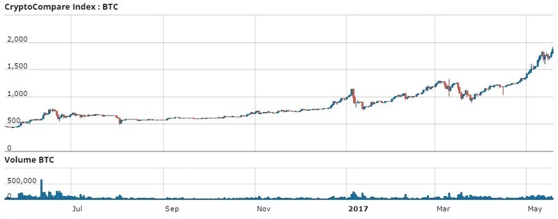
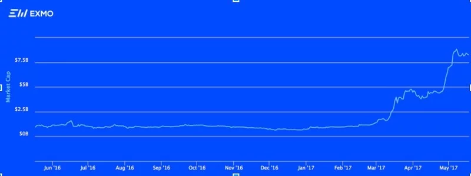
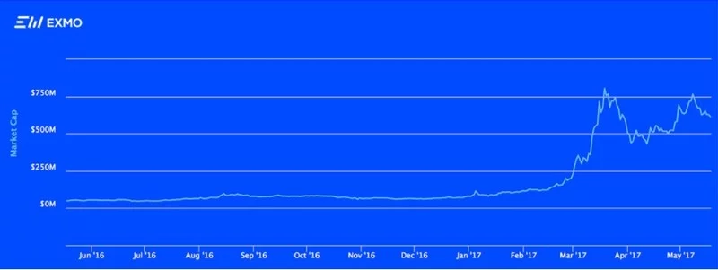

Рост капитализации основных криптовалют в последний год, безусловно, привлекает инвесторов, желающих преумножить свои средства через вложения в биткоин или наиболее перспективные альткоины (так называются все криптовалюты помимо биткоина). Кто-то предпочитает биткоин, как наиболее капитализированную и устойчивую криптовалюту, выросшую за последний год на 300%, кто-то считает более прибыльными вложения в другие монеты, наиболее перспективные и все еще достаточно надежные, например инвестиции в Эфириум или Dash, продемонстрировавшие за последний год 8- и 12-кратный рост. А часть инвесторов идет комбинированным путем и включает в инвестиционный пакет и BTC, и альтернативные валюты.
О преимуществах и недостатках инвестирования в криптовалюты мы решили расспросить специалистов криптовалютной биржи Exmo, и они подготовили этот подробный обзор для наших читателей.
На первый взгляд, очень соблазнительно вложить все деньги в альткоин, который вырос в десяток раз только за последний год, и еще через год стать в десять раз богаче. Однако не все так просто. Рост курса альтернативных криптовалют более “зыбкий”, и нередко бывает подогрет, прежде всего, усилиями спекулянтов и рекламными кампаниями, и лишь во вторую очередь, какими-то реальными преимуществами их технологии; в таких случаях рост может окончиться и стагнацией, и даже сдачей позиций. Вдобавок нельзя забывать и про эффект “низкой базы”, который будет описан позднее.
Поэтому инвестиции в биткоин остаются очень серьезной альтернативой вложениям в альткоины. Многие опытные инвесторы допускают, что даже у наиболее успешных на сегодня альткоинов рост курса в ближайший год, как минимум, замедлится, а в худшем случае возможны и стагнация, и падение в несколько раз. Поэтому инвестиции в биткоин рассматриваются как гораздо менее рискованные, хоть и не обещающие годовых прибылей в 1000%.
Но в целом ситуация неоднозначная, о чем сигнализирует, например, рост абсолютной и относительной капитализации альткоинов.
Рассмотрим более внимательно, какие возможности, перспективы и риски связаны с инвестициями в криптовалюту. Начнем с плюсов и минусов инвестирования в биткоин, тем более что эти плюсы и минусы в значительной степени характерны для инвестирования и в другие криптовалюты; затем обратим внимание на особенности помещения ваших средств в альткоины.
Каковы плюсы и минусы инвестиций в биткоин?
Начнем с преимуществ, на которые у биткоин-инвестора есть основания рассчитывать:
1) Биткоин демонстрирует стабильный, в годовых масштабах, рост цены, и есть основания полагать, что этот тренд сохранится. На графике ниже видно, что курс биткоина за последние 12 месяцев вырос примерно в 4 раза, с 450 до 1700 долларов;

2) Доверие сообщества к биткоину больше, чем к любой иной криптовалюте, что в известной степени гарантирует биткоин не только от краха, но и от длительного и сильного снижения цены. Все просадки последних лет биткоин успешно отыгрывал, а затем шел вверх. То, что биткоин обладает наибольшей из всех криптовалют капитализацией и наибольшим числом пользователей, дополнительно укрепляет его позиции;
3) Успешное решение проблемы масштабирования биткоина, если его удастся добиться, также откроет цене путь наверх;
4) Биткоин обладает гораздо большей ликвидностью по сравнению с любой другой криптовалютой; для рядового пользователя это значит, что у него всегда будет обширный выбор возможностей купить или продать биткоины, вплоть до возможности купить биткоины в биткойномате. Технические и программные приспособления для осуществления операций с биткоином также довольно распространены; например, производители Trezor, KeepKey и Ledger предлагают для хранения биткоина хороший ассортимент аппаратных кошельков.
5) Финансовая и политическая нестабильность может привести к тому, что в отдельных странах, или в мире в целом, фиатные валюты станут слишком ненадежными для хранения накоплений, в то время как биткоин (наряду с другими стабильными активами, например, золотом) останется твердым средством сбережения денег. Если это произойдет, тот, кто озаботится купить биткоин сегодня, безусловно, окажется “на коне”.
6) Биткоин пока что свободен от того давления и избыточного контроля, которые все больше отравляют жизнь владельцам фиатных денег. Государства стремятся как можно больше ограничить наличное денежное обращение, а хранение денег в банке означает чрезмерную “прозрачность” ваших финансов для контролирующих органов, высокие комиссии на большинство банковских операций и, в ряде случаев, даже отрицательный процент на депозит и ограничение возможности обналичить последний. В то же время, хранение биткоина совершенно бесплатно, а операции с ним не ограничены государственными и банковскими бюрократическими установлениями, словом, биткоин совершенно децентрализован и относительно анонимен, точнее, псевдонимен.
Минусы и риски
1) Проблема масштабирования биткоин-сети пока еще не решена. Между тем, пропускная способность сети давно вызывает тревогу, а рост комиссий делает невыгодными мелкие транзакции (например, связанные с продажей биткоина, добытого на биткоин-кранах), да и транзакции с приличной комиссией все чаще “застревают” в сети. Ни один из вариантов решения проблемы (ни софт форк Segregated Witness, ни хард форк Bitcoin Unlimited) нельзя назвать идеальным выходом из ситуации, и решающей поддержки сообщества и майнеров ни один из них еще не добился. Если обновления протокола так и не произойдет, это будет означать усугубление проблем загруженности сети и ослабление позиций биткоина как платежного инструмента. Биткоин, как инвестиционный актив, не должен напрямую пострадать от плохой проходимости сети, однако ослабление интереса со стороны тех, кто видит в биткоине, прежде всего, платежную систему, может негативно сказаться на цене. К тому же, если инвестор вдруг захочет продать биткоины, которые хранились не на предпочитаемой им бирже, а на локальном или веб-кошельке, проблемы с переводом монет на биржу или в обменник, где производится обмен биткоина, могут доставить немало беспокойства.
2) Проблема избыточного государственного регулирования, а в некоторых странах, и явно запретительной политики, для биткоина сегодня вполне актуальна. Излишний контроль, в известном смысле, оборотная сторона его легализации.
3) Резкий рост курса биткоина в последнее время (от $1000 до $1300 за январь-апрель 2017 года и от $1300 до $1700 в последние две недели) порождает опасения в том, что курс может “обвалиться” и даже вернуться на прежние позиции; впрочем, у биткоина имелись и имеются серьезные предпосылки для роста, поэтому совсем необязательно рассматривать этот рост как “пузырь”. Что же касается высокой волатильности биткоина, она больше затрудняет использование биткоина для краткосрочных операций, таких, как покупка биткоина на бирже для обмена на товар, который можно оплатить биткоинами по курсу, а не для инвестирования на длительный срок. К тому же есть основания считать, что волатильность будет снижаться в будущем, если биткоин войдет в более стабильную фазу своего развития.
Каковы особенности альткоинов как инвестиционного инструмента?
Для значительных по капитализации и авторитету криптовалют частично актуальны некоторые из описанных выше достоинств биткоина, например, устойчивость, проистекающая из значительной капитализации или способность выводить ваши средства из-под контроля государства
Что же до перспектив ценового роста – потенциально у многих альткоинов они могут быть даже выше, чем у биткоина. Ранее уже приводился пример с криптовалютами Эфириум и Dash, которые за последний год продемонстрировали примерно 8- и 12-кратный рост цены против 4-кратного у биткоина. Как видно на графике, криптовалюта эфир после летнего спада (обусловленного не ее собственными проблемами, а крахом платформы DAO) постепенно восстанавливала курс и копила силы для рывка вверх, который начался в январе 2017 года и, возможно, еще далеко не окончен.

Проблема, однако, в том, что подобный рост, причем без последующего отката, могут продемонстрировать лишь наиболее успешные альткоины, и то, скорее всего, в последующий период они уже не смогут вырасти так же хорошо. Это во многом обусловлено эффектом “низкой базы”.
Он выражается в том, что быстрый рост капитализации какой-нибудь успешно реализованной криптовалюты, например, в 5 раз от изначального уровня, не так уж труднодостижим, потому что уровень этот был для данной монеты еще очень низок; инвесторы охотно брали монету, которую они сочли и перспективной и пока еще очень дешевой, а спекулянты, игравшие на повышение, могли относительно легко гнать цену вверх, разогревая интерес еще больше. Однако после того, как этот рост осуществился, и капитализация приобрела значительные размеры, еще одно пятикратное увеличение цены уже не дастся так легко. На конкретном примере это можно описать так: трудно представить себе криптовалюту Dash, стабильно продающуюся по цене в 0,6 биткоина вне ситуации, когда BTC окажется в самом тяжелом кризисе, и трудно представить себе цену на ту же криптовалюту в $1000. вне ситуации, когда стоимость биткоина будет составлять уже порядка $10 000.
Как уже отмечалось, на протяжении последних нескольких лет отмечен рост капитализации альткоинов, и относительной, и выраженной в абсолютных цифрах. Год назад 80% от общей капитализации всех криптовалют приходилось на биткоин, и на долю альткоинов оставалось менее 20%. Теперь же этот показатель вырос в 2.5 раза и превышает 50%. В абсолютных цифрах мы видим еще более впечатляющий рост капитализации альтокоинов – примерно в 16 раз (с 1.7 до 28 млрд.долл., см.график). Не факт, что эта тенденция сохранится в течение хотя бы ближайшего полугодия, но для прошедшего года она была довольно характерна. Это означает, что часть солидных инвесторов при инвестициях в криптовалюты или отдает предпочтение альткоинам, или хотя бы составляет из них весомую часть инвестиционного пакета – может быть, из-за технологических преимуществ конкретных криптовалют, или потому, что у них вызывает беспокойство будущее биткоина; действительно, если проблема масштабирования биткоина так и не будет разрешена на приемлемом для большей части сообщества уровне, многие решат продать биткоины, и это весьма серьезно укрепит позиции наиболее авторитетных альткоинов.

Перспективы некоторых успешных альткоинов улучшает то, что они могут обеспечивать работу ряда инновационных программных разработок (наподобие смарт-контрактов в случае с Эфириумом, или создания двухуровневой платежной сети в случае с Dash). Интересный момент заключается и в том, что часть альткоинов может “приносить проценты” просто при хранении. Так, владельцы мастернод Dash получают вознаграждение в виде части добываемых майнерами монет (при условии, что владелец мастерноды непрерывно поддерживает ее онлайн), а владельцы криптовалют, которые добываются с помощью POS майнинга, получают, в зависимости от их сбережений, то или иное количество новых монет просто при отсутствии активных действий над запасенными в их локальном кошельке монетами (локальный кошелек играет роль ноды).
Иногда инвесторы “имеют право голоса” и могут влиять на решение тех или иных вопросов развития криптовалюты, правда, это влияние можно считать значимым только при действительно крупных по размеру сбережениях в данной криптовалюте.
Для альткоин-инвестора некоторой проблемой является то, что законодательная оформленность и защищенность биткоина как финансового инструмента несколько выше, чем аналогичный показатель у альткоинов. Так, в Японии биткоин уже легализован, как средство оплаты, а, скажем, лайткоин – еще нет.
Особняком от солидных альткоинов с хорошей капитализацией стоят более слабые монеты. Их невысокая капитализация дает крупным трейдерам возможность “шатать” их курс в спекулятивных целях, отчего он может оказаться искусственно поднятым (может быть, даже многократно и на значительный срок), а потом снова упасть. Таким образом, все подобные альткоины, в сущности, правильнее считать не инвестиционным, а, прежде всего, спекулятивным инструментом, на котором удается зарабатывать в основном наиболее крупным и искусным игрокам (манипуляторам), а инвестор рискует закупиться по раздутой цене и в итоге потерять большую часть депозита. Даже без необратимых падений, резкие ценовые скачки в произвольном направлении, безусловно, отталкивают серьезных инвесторов; качественный инвестиционный актив не должен по несколько раз в месяц или неделю испытывать нервы владельца на прочность очередным катастрофическим падением. Правда, и альткоины наподобие, к примеру, Эфириум, на начальном этапе своего существования входили в число подобных слабых валют, но перспективность их технологии позволила им вырасти в десятки раз и занять более достойное место под солнцем.
Подытоживая, можно сказать, что инвестирование в альткоины разных уровней (состоявшиеся, перспективные, неопределенные и т.д.) потенциально может быть и гораздо более прибыльно, чем вложения в биткоин, однако ценой более высокого риска потерять деньги из-за просадок или постепенного “сползания” цены.